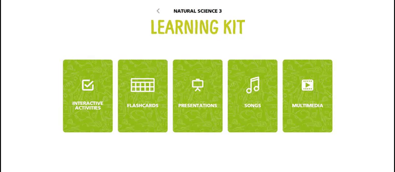
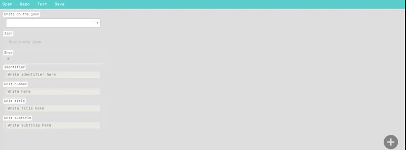
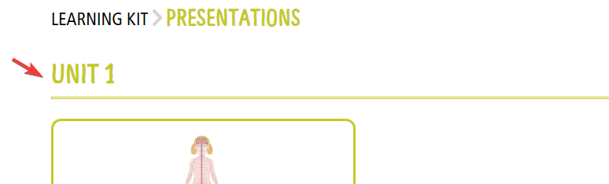
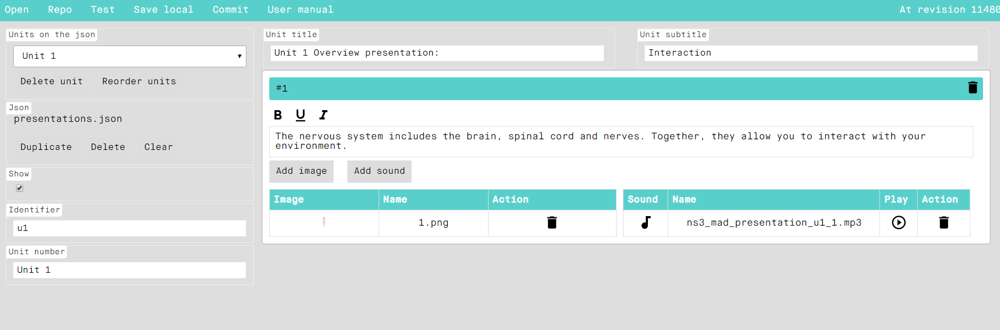

En este manual, vamos a ver cómo se crea el módulo interactivo de Presentations de los libros de ByMe. Habitualmente, este módulo no necesitará ser enlazado al libro, dado que su enlace estará preestablecido en el map del repositorio, por tanto, una vez se haya generado el contenido, podremos tener el módulo funcionando.
Como su propio nombre indica, se denominan Presentations a una serie de diapositivas interactivas, con una imagen que lleva asociada un texto, así como el audio del mismo. Además, las diferentes diapositivas van ordenadas por unidades.
Por tanto, vamos a explicar las fases de edición para conseguir generar el módulo de Presentations.
Desde editorial, se nos proporcionarán las imágenes, los audios y el texto que debe ir en cada diapositiva además de indicarnos la unidad a la que pertenece cada una y el orden de aparición dentro de cada unidad. Habitualmente suelen proporcionarnos un doc con toda esta información similar a éste (puede ser diferente):
Lo primero que hay que hacer es adaptar las imágenes de origen proporcionadas por editorial a un tamaño y formato adecuado, en este caso, sería:
Estas serían las imágenes proporcionadas por editorial (observamos que pueden venir en diferentes formatos, tamaños y resoluciones):
Es buena práctica generar estas imágenes en una carpeta de trabajo fuera del repositorio del que estemos trabajando. Estas serían nuestras imágenes una vez tratadas:
Una vez tenemos todas las imágenes preparadas, las dejamos reservadas para el montaje posterior mediante la herramienta correspondiente del CAT.
Se ha de resaltar, que la nomenclatura de los archivos no puede contener ni espacios, ni caracteres especiales (como tildes, ñ, @, !, ?, apóstrofos, etc.), sin embargo, de momento no trataremos este problema, ya que la herramienta de edición de presentations, realizará este proceso de forma automática.
Lo primero que hay que hacer es comprobar que los audios de origen proporcionadas por editorial vienen en formato adecuado:
En caso contrario, o bien se solicitan de nuevo, o habría que pasar uno a uno por un conversor, para conseguirlo. Es buena práctica generar estos audios en una carpeta de trabajo fuera del repositorio del que estemos trabajando. Estas serían nuestros audios:
Una vez tenemos todas los audios preparados, los dejamos reservados para el montaje posterior mediante la herramienta correspondiente del CAT.
Se ha de resaltar, que la nomenclatura de los archivos no puede contener ni espacios, ni caracteres especiales (como tildes, ñ, @, !, ?, apóstrofos, etc.), sin embargo, de momento no trataremos este problema, ya que la herramienta de edición de presentations, realizará este proceso de forma automática.
Para poder logarse en el CAT es necesario disponer de:


En primer lugar, nos aseguramos de que el CAT está perfectamente updateado:

Para acceder a la herramienta del Cat que nos ayudará a generar las presentaciones pulsamos el siguiente icono, denominado Presentation:

Tal y como hemos anticipado antes, nuestra herramienta nos permite cargar el material previamente tratado (imágenes y audios) en el repositorio del libro en el que estemos trabajando. Además, durante este proceso, realizará una “limpieza” de la nomenclatura de los archivos, para evitar posibles errores posteriores de carga en la plataforma web (espacios, caracteres especiales, etc). Por tanto, a partir de este momento, es probable que alguno de los archivos de imagen o audio que vienen reflejados en el doc, no tengan exactamente la misma nomenclatura, pero sí será muy similar y fácilmente identificable.
Comprobamos que, en nuestro repositorio, no existe la carpeta presentations:
Desde la herramienta Flashcards pulsamos el botón “Repo”, en la pantalla que nos aparece pulsamos “Add asset” y se nos abrirá un explorador desde el que podremos acceder a las carpetas en las que hemos reservado nuestras imágenes y nuestros audios:
Seleccionamos todas nuestras imágenes:
Repetimos pulsar “Add asset” y seleccionamos todos nuestros audios:
Pulsaremos “Add new ones to the repository”, para que nos las cargue automáticamente en nuestro libro (esta operación puede tardar más o menos tiempo dependiendo del peso de los archivos a subir):
Una vez cargadas, la pantalla de “Repo”, ya no las muestra en color verde (este color indica que los asset o archivos son nuevos y no están en el repositorio) y podemos filtrar por audios e imágenes, para comprobar que están todas las que vamos a necesitar:
Si posteriormente necesitáramos cargar algún archivo nuevo, realizaríamos el mismo proceso.
Updateamos ahora nuestro repositorio y comprobamos que se nos ha generado la carpeta presentations, dentro de ella habrá otras 2 carpetas que contienen de forma independiente las imágenes y los audios que acabamos de cargar desde la herramienta, perfectamente renombrados sin espacios ni caracteres especiales:
En primer lugar, vamos a definir las unidades, que serán los bloques que nos aparecen en la pantalla principal, en nuestro ejemplo (Unit 1, Unit 2, Unit 3):
Para ello, pulsamos el botón “Open” y seleccionamos el archivo “presentations.json” (inicialmente no debe cambiarse de nombre)
En el desplegable de “Units on the json”, seleccionamos “New unit” y observaremos que se nos activan los campos “Show”, “Identifier” y “Unit number”
El campo “Show” viene marcado por defecto, si desactiváramos el check, la unidad correspondiente no se mostraría en la plataforma digital. Esta opción puede ser necesaria en algunos casos durante el proceso de edición, ya que es posible, que haya que dejar activas ciertas unidades (que ya estarían completas en contenido) y dejar ocultas otras (por ejemplo, porque están a medias de montar por falta de algún contenido o material pendiente de proporcionar desde editorial).
El campo “Identifier” es muy importante en las presentaciones, ya que, en ciertas partes del libro, muestran diferentes presentaciones asociadas a la misma unidad (pueden ser diferentes tipos de presentaciones, o bien la misma presentación en varios idiomas), esta asociación de presentaciones a una misma unidad sólo podrá ser realizada aplicándole el mismo identifier. Para ello, aplicaremos siempre el mismo criterio:
En el campo “Unit number” definiremos el texto que aparecerá en la cabecera de la unidad, en nuestro ejemplo Unit 1:
Una vez definidos estos campos, procederemos a salvar los campos, mediante el botón “Comit”. Realizaremos la misma operación con todas y cada una de las unidades, teniendo en cuenta que para que nos guarde los cambios es necesario realizar un comit por cada ud:
Posteriormente, iremos completando cada una de las unidades. Para ello, seleccionamos la primera, y pulsamos el botón “+”:
Observamos que, en la parte derecha, aparecen los campos “Unit title” y “Unit subtitle”, además de aparecer una nueva línea debajo. En el campo “Unit title” escribiremos el nombre de la unidad seguido del tipo de presentación que estamos creando, tal y como nos lo hayan definido en el doc desde editorial, en nuestro ejemplo Unit 1 Overview presentation:
En el campo “Unit subtitle” escribiremos el nombre del tema de la unidad, tal y como nos lo hayan definido en el doc desde editorial, en nuestro ejemplo (Interaction, Our bodies, Animals, etc):
Si intentamos salvar en este momento, nos avisará que existe un problema. Por lo que, para poder guardar una unidad, al menos debemos tener una diapositiva. Esto es un sistema de seguridad, ya que no se pueden generar presentaciones sin contenido.
Por tanto, vamos a ver el proceso para generar cada una de las presentaciones.
Dentro de la unidad, nos posicionamos sobre la línea #1, al pulsar sobre la zona verdosa se desplegará y nos aparecerán ciertos campos para editarla:
Rellenaremos los campos siguiendo lo indicado en el doc de editorial, texto, imagen y audio:
Una buena práctica de trabajo sería pulsar el botón “Comit” cada vez que completamos una diapositiva (de esta forma el cambio queda guardado automáticamente en el repositorio):
Del mismo modo, vamos generando todas y cada una de las diapositivas de la unidad, para ello pulsaremos el botón + situado en la parte inferior derecha de la pantalla principal:
Podemos ir comprobando el funcionamiento de los que llevamos creado pulsando el botón Test del menú superior:
Una vez guardada la primera unidad, podemos proceder a generar más unidades repitiendo el mismo procedimiento (imprescindible hacer comit una vez acabada cada unidad, para que guarde los cambios):
Una vez que hayamos cargado los contenidos, updatearemos nuestro repositorio, comprobando que en nuestra carpeta se ha creado e ido actualizando el archivo “presentations.json”
Tal y como anticipábamos antes, las presentaciones se muestran en distintos módulos de nuestra publicación digital, ya sea la misma versión de diferente idioma, ya sean distintos tipos de presentaciones.
Hasta ahora hemos estado generando el archivo “presentations.json” que habitualmente coincidirá con la versión en ingles de las presentaciones tipo “Overview presentation”.
Es importante que este json esté completo antes de iniciar el siguiente paso, ya que de lo contrario nos supondrá duplicar, triplicar o incluso cuadriplicar el trabajo posteriormente.
En esta operación vamos a generar 2 copias de el archivo que se denominarán:
Es importante no variar ni un carácter a estos archivos, ya que, de lo contrario, no se mostrará nada en la plataforma.
A partir de este momento nuestro archivo “presentations_eng.json” será la versión en inglés de nuestra presentación que muestra la plataforma. Cualquier modificación posterior solicitada por editorial, deberá realizarse en este archivo.
Habitualmente, todas las presentaciones se muestran también en versión español. De ahí que, en el paso anterior, hayamos realizado también el duplicado de nuestro json al formato “presentations_spa.json”
La editorial, debe proporcionarnos un doc, con las especificaciones necesarias para esta versión, además del material necesario para montarla (audios y textos traducidos a la nueva versión, ya que las imágenes suelen ser las mismas en ambas versiones):
Por tanto, en nuestra herramienta del CAT, añadiremos al repositorio los nuevos audios en español, siguiendo los mismos pasos que explicamos en el epígrafe de carga de material en el repositorio:
Con el material cargado abriremos el json de la versión en español (presentations_spa.json):
Seleccionamos la primera unidad:
Traducimos los campos “Unit number” y “Unit title” sustituyendo el contenido por el indicado por editorial, en nuestro ejemplo “Presentación general de la unidad 1:”
Después, iremos traduciendo cada una de las diapositivas, para ello, las desplegamos, traducimos su texto, y sustituimos el audio:
Una vez realizado esto con todas y cada una de las diapositivas de todas las unidades, deberíamos obtener dos archivos json con la misma estructura, los textos traducidos y los audios correspondientes a cada idioma.
Como ya indicamos antes, hay libros especiales, que tienen diferentes tipos de presentaciones dentro de la misma unidad. No se trata de la traducción de la misma presentación como veíamos en el epígrafe anterior, sino de una completamente diferente.
A pesar de ello, comenzaremos duplicando uno de los json de presentaciones que ya tenemos generados, ya que al menos parte de la estructura general será coincidente y podremos aprovechar esa parte del trabajo, modificando exclusivamente lo que vayamos necesitando.
En el ejemplo que vemos en la captura anterior, las unidades impares solo tienen presentaciones tipo “Overview” (las que hemos creado hasta ahora), pero las unidades pares llevan además presentaciones tipo “Create”. Por tanto, vamos a explicar el proceso de edición de las “Create”.
Al tratarse de unas presentaciones en versión inglés, procederemos a duplicar el archivo “presentations_eng.json” y lo denominaremos “presentations_eng_create.json”. es muy importante no variar ningún caracter, ya que el libro tendrá preenlazado este archivo y de lo contrario, la plataforma no mostrará su contenido:
Seleccionamos el nuevo json que acabamos de crear, y en el caso de nuestro ejemplo, borraríamos las unidades impares:
Ahora editaríamos las unidades que tenemos, para ajustarlas a su contenido correspondiente:
Y lo mismo con cada una de las diapositivas:
Una vez realizado con todas las unidades, tendríamos nuestras presentaciones tipo “Create” en versión inglés.
Dependiendo de los casos, según nos sea solicitado por editorial, este tipo de presentaciones podrá llevar solo versión inglesa o también la versión traducida al español.
Si nos solicitaran la segunda opción, una vez montado el archivo:
presentations_eng_create.json
Procederíamos a duplicar de nuevo este archivo y realizaríamos los mismos pasos detallados en el epígrafe anterior, con la única salvedad, que el nuevo archivo debería denominarse “presentations_spa_create.json".
Es probable que en alguna ocasión tengamos que hacer una reordenación de las presentaciones que van en cada unidad.
Para ello, abriremos el json que queramos modificar y pulsaremos el botón “Reorder Units”. En la pantalla que nos aparece, recolocaremos las unidades en el nuevo orden que nos interese, y pulsaremos “Save changes”
Posteriormente, editaremos cada una de ellas, para que indiquen el nuevo título que les corresponde, según la nueva ordenación:
En el caso de las diapositivas, también podemos reordenarlas si fuera necesario, para ello, iremos a la unidad en cuestión, y tan solo tendremos que arrastrar la línea que contiene cada una de ellas para proceder a su nueva ordenación:
Una vez salvemos los cambios, nos mostrará el contenido tal y como lo hemos reordenado.
Como hemos ido viendo, se generan diversos archivos json, según las necesidades de cada libro. Sin embargo, es necesario eliminar aquellos que no sean necesarios. En concreto el archivo de partida que nos sirvió a modo de plantilla para ir generando todos los demás, debe ser eliminado, ya que no va a ser utilizado por la plataforma.
Para ello, le abrimos mediante el botón “Open” y una vez seleccionado pulsamos el botón “Delete” en la parte correspondiente al json:
Updateamos el repositorio, para confirmar que sólo estén los json que necesita nuestro proyecto: